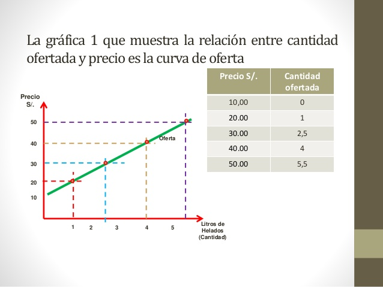
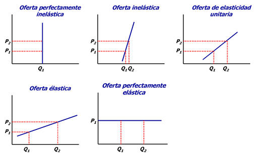

Es la cantidad de mercancias que tienen posibilidad de ser vendidas a los diferentes precios del mercado, por individuo en una sociedad.
Al aumentar los precios, las cantidades ofrecidas tambien se incrementan; cuando los precios disminuyen, las cantidades ofrecidas se reducen, en otras palabras, la oferta es directamente proporcional a el precio de los bienes y servicios.
Determinantes de la oferta
-
costo de produccion (c)
-
nivel tecnologico (t)
-
precio del bien (p)
La formula de la oferta se expresa de la siguiente manera:
O= f(c, t, p)

La grafica de la oferta se representa teniendo en cuenta que el eje x hace referencia a la cantidad ofrecida y el eje y, a los precios del bien.
Ley de la Oferta
Cuando la cantidad de un bien que se ofrece en el mercado aumenta en razon directa de su precio, siempre que las condiciones no varien (costo de productos y nivel tecnologico).
Elasticidad de la Oferta
Existen cinco tipos de elasticidad de acuerdo con la forma en que responde la cantidad ofrecida al variar el precio.
-
perfectamente inelastica (totalmente vertical)
-
perfectamente elastica (totalmente horizontal)
-
elasticidad unitaria
-
relativamente elastica
-
relativamente inelastica
